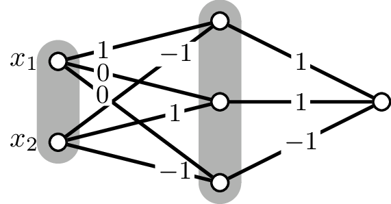
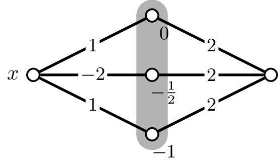
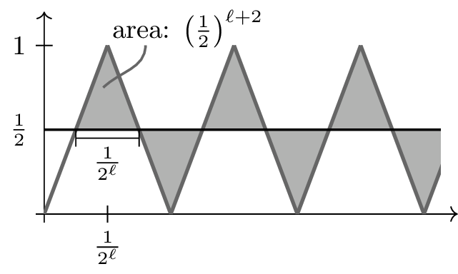

\(\newcommand{\bigO}{O} \newcommand{\trsp}[1]{#1^\intercal} % transpose \DeclareMathOperator*{\expec}{\mathbb{E}} % Expectation \DeclareMathOperator*{\proba}{\mathbb{P}} % Probability \DeclareMathOperator*{\vari}{\mathbb{V}} % Probability \DeclareMathOperator*{\argmin}{argmin} \DeclareMathOperator*{\argmax}{argmax} \newcommand{\sigm}{\phi_{\text{sig}}} % logistic function \newcommand{\bigOmega}{\Omega} \newcommand{\softmax}{\textsf{soft}} \newcommand{\KL}{\textrm{D}_\textrm{KL}} % Kullback-Leibler divergence \newcommand{\twovec}[2]{\begin{pmatrix}#1\\#2\end{pmatrix}} \newcommand{\rank}{\text{rank}} \newcommand{\diag}{\text{diag}} % diagonal matrix \newcommand{\ph}[1]{\mathsf{#1}} % general polyhedron \)
5. Properties of neural networks#
5.1. ReLU networks and piecewise affine functions#
We’ve trained and studied neural networks – but what kind of functions do they actually encode? It turns out, ReLU networks encode quite simple functions, namely piecewise affine functions.
A function \(f:\mathbb R^n\to\mathbb R^m\) is piecewise affine if there are finitely many polyhedra \(\ph Q_1,\ldots,\ph Q_s\subseteq\mathbb R^n\) such that \(\mathbb R^n=\bigcup_{i=1}^s\ph Q_i\) and \(f|_{\ph Q_i}\) is an affine function for every \(i=1,\ldots, s\). The polyhedra \(\ph Q_i\) are the pieces of \(f\). The smallest number of pieces \(\ph Q_1,\ldots,\ph Q_s\) such that \(f|_{\ph Q_i}\) is affine for every \(i=1,\ldots,s\) is the piece-number of \(f\).
Theorem 5.1
The function computed by a (leaky) ReLU neural network with linear (or ReLU, or leaky ReLU) output layer is a continuous piecewise affine function.
Proof. The function \(f\) computed by a (leaky) ReLU neural network with linear output layer of depth \(k\) can be written as the concatenation of affine functions \(L_1,\ldots, L_k\):
where \(\sigma\) is the (leaky) ReLU function. We immediately see that \(f\) is continuous as it is a concatenation of continuous functions.
We do induction on the depth \(k\) of the network. For \(k=1\), the network is simply an affine function. So, consider a depth \(k>1\). Then
is piecewise affine with pieces \(\ph Q_1,\ldots, \ph Q_M\).
Consider a piece \(\ph Q_i\). Restricted to \(\ph Q_i\) the function \(g:\mathbb R^n\to\mathbb R^m\) can be expressed as \(x\mapsto Ax+b\) for some matrix \(A\) and vector \(b\). For each subset \(S\subseteq \{1,\ldots,m\}\) we split \(\ph Q_i\) into parts \(\ph Q^{(S)}_i\) defined as
Note that each \(Q_i^{(S)}\) is a polyhedron since \(\ph Q_i\) is one. Moreover, \(\sigma\circ g\) restricted to \(\ph Q_i^{(S)}\) is an affine function, and then so is \(f=L_k\circ\sigma\circ g\). Thus we see that \(f\) is piecewise affine with pieces \(\ph Q_i^{(S)}\).
How many pieces does the function computed by a neural network have? Let’s find out.
Lemma 5.1
Let \(f,g:\mathbb R\to\mathbb R\) be piecewise affine functions, and let \(f\) have piece-number \(k\), and let \(g\) have piece-number \(\ell\). Then
\(f+h\) has piece-number at most \(k+\ell\).
\(f\circ g\) has piece-number at most \(k\ell\).
Proof. 1. Consider the endpoints of the \(k\) pieces of \(f\) and \(\ell\) pieces of \(g\), order their union \(p_1<p_2<\ldots < p_s\) by size. As \(f\) has \(k-1\) such points, and \(g\) has \(\ell-1\) such points, it follows that \(s\leq k+\ell-2\). (Why the \(-1\)? Because the first piece and the last piece of \(f\) and of \(g\) are infinite intervals.) Then \(f+g\) is affine on \([p_i,p_{i+1}]\) for each \(i=0,\ldots, s\), where we put \(p_0=-\infty\) and \(p_{s+1}=\infty\).
Let \(J\) be one the \(\ell\) pieces of \(g\), and let \(I_1,\ldots, I_k\) be the \(k\) pieces of \(f\). Then \(g|J\) is an affine function, and thus
is a partition of \(J\) into at most \(k\) intervals. On each of these \(f\circ g\) is affine. In total there are at most \(k\ell\) such intervals.
Theorem 5.2
Let \(\mathcal N\) be a (leaky) ReLU network with one input, one output node and \(L-1\) hidden layers such that layer \(\ell\) has \(n_\ell\) neurons. Set \(\overline n=\sum_{\ell=1}^Ln_\ell\). Then \(\mathcal N\) compute a piecewise affine function with piece-number at most
Proof. We proceed by induction over the number of layers. The induction start, with \(L=0\), is trivial. For the induction step, assume the result to be proved for \(L-1\).
Then, each of the \(n_\ell\) neurons in the penultimate layer computes a piecewise affine function with at most
pieces. By Lemma 5.1 2., this implies that
is a piecewise affine function with at most
many pieces. Next, we observe that the leaky ReLU function \(\sigma\) is piecewise affine with two pieces. Thus, Lemma 5.1 2. yields that \(f^{(L)}(x)=\sigma(g^{(L)}(x))\) is piecewise affine with at most
pieces.
Finally, the upper bound in the statement follows directly from the inequality of the arithmetic and the geometric mean.
Theorem 5.3
A function \(f:\mathbb R^n\to\mathbb R\) is continuous piecewise affine if and only if there are affine functions \(g_i,h_i\), \(i=1,\ldots,N\) such that
{kind=link}
Fig. 5.1 An illustration of Theorem 5.3: The piecewise affine function \(f\) can be expressed as the sum of the concave function \(g\) and the convex function \(h\). The convex function \(h\) is the pointwise max of two affine functions (dashed), while the concave function \(h\) is the min of two affine functions (dashed). Note that \(-g\) is a convex function and that \(-g\) can then be seen as the max of two affine functions.#
Proof. We will only do the proof of the \(\Leftarrow\)-direction. The other direction follows, for instance, from a result of Wang and Sun (2005).
First, we note that if \(g,h\) are continuous piecewise affine functions then this is also the case for \(g-h\). Thus, by induction, it suffices to prove that: if \(g_1,g_2:\mathbb R^n\to\mathbb R\) are continuous piecewise affine, then \(g:x\mapsto \max\{g_1(x),g_2(x)\}\) is continuous and piecewise affine, too. That \(g\) is contiuous is elementary – we only prove that \(g\) is piecewise affine.
For this, let \(\ph Q_1^1,\ldots, \ph Q_k^1\) be the pieces of \(g_1\), and let \(\ph Q_1^2,\ldots, \ph Q_\ell^2\) be the ones of \(g_2\). We first note that each \(\ph Q_i^1\cap \ph Q_j^2\) is again a polyhedron (this is a simple fact about polyhedra), and that each of \(g_1\) and \(g_2\) is affine on \(\ph P'_{ij}=\ph Q_i^1\cap \ph Q_j^2\). We split each \(\ph P'_{ij}\) into two parts:
As \(g_1,g_2\) are affine on \(P'_{ij}\), both \(\ph P_{ij1}\) and \(\ph P_{ij2}\) are polyhedra. (Again, this is a basic fact about polyhedra.) As \(f|{\ph P_{ij1}}=g_1|{\ph P_{ij1}}\) and \(f|{\ph P_{ij2}}=g_2|{\ph P_{ij2}}\), it follows that \(f\) restricted to each \(\ph P_{ijr}\) is affine, which proves \(f\) to be piecewise affine.
The number \(N\) may be seen as a measure of how complex the piecewise affine function \(f\) is. It would be nice to put \(N\) in relation with the number of pieces (and perhaps the dimension \(n\)) but at the moment I do not see a good way how to do that. Note, moreover, that each of \(\max_{i=1,\ldots,N}g_i(x)\) and \(\max_{j=1,\ldots,N}h_j(x)\) is a convex function. (Recall Lemma 3.6.)
5.2. Universal approximators#
How expressive are neural networks? We have already seen above that every Boolean function can be realised as a ReLU network. What about more complicated functions? Since ReLU networks encode piecewise affine functions such a network cannot reproduce any function that is not piecewise affine – but can every piecewise affine function be realised? Yes!
Let’s define the depth of a neural network as the number of its layers not counting the input layer. For example, a shallow neural network with input layer, one hidden layer and output layer has depth 2. Let’s say that the neural network has width at most \(d\) if no layer, except possibly for the input layer, has more than \(d\) neurons.1Universal function approximation by deep neural nets with bounded width and ReLU activation, B. Hanin (2017), arXiv:1708.02691
Theorem 5.4 (Hanin (2017))
Let \(f:\mathbb R^n\to\mathbb R\) be a continuous piecewise affine function. If
where the \(g_i\) and \(h_j\) are affine functions, then exists a ReLU neural network \(F\) with linear output layer of depth at most \(3N\) and width \(4n+12\) such that \(F(x)=f(x)\) for all \(x\in\mathbb R^n\).
What is remarkable about this theorem? A thin but deep network can express every function that any ReLU network, of whatever width, can ever compute, and modern neural networks are precisely of that type: relatively thin but with many layers.
For the following lemmas, I will write ReLU network to mean ReLU neural network with linear output layer. Consider a neural network of the form
where each \(L^{(i)}\) is an affine function, and each \(\sigma^{(i)}:\mathbb R^{n_i}\to\mathbb R^{n_i}\) is the activation function of layer \(i\). For this section, let us call \(\sigma^{(i)}\) a \ndefi{linear/ReLU} activation function if each entry of the vector function is the identity or the ReLU function. If each activation function is linear/ReLU (except for the output, where we require no activation) then we call the network a linear/ReLU network. (Yes, that is clunky, but we’ll only use the name here.)
We can always get rid of linear activation in hidden layers without increasing the size of the neural network too much.
Lemma 5.2
Let \(\mathcal N\) be a linear/ReLU network of depth \(d\) and width \(w\). Then there is a ReLU network \(\mathcal N'\) of depth \(d\) and width at most \(2w\) that computes the same function.
Proof. Consider a neuron of \(\mathcal N\), not in the output layer, with linear activation. Then the neuron computes an affine function \(x\mapsto \trsp wx+\beta\), where \(w\) is a vector of \(\beta\) a number. Then
represents the same function \(x\mapsto \trsp wx+\beta\). Thus, each neuron in \(\mathcal N\) in each hidden layer with linear activation can be replaced by two ReLU neurons, without changing the computed function.
Next, we need to think about how to compose smaller networks into a larger network.
Lemma 5.3
Let \(f_1,f_2:\mathbb R^n\to\mathbb R^m\) be two functions that can be computed by linear/ReLU networks of depth \(k\) and width \(\ell\). Then \(f_1+f_2\) can be computed by a linear/ReLU network of depth \(k\) and width \(2\ell\).
Proof. Put the networks for \(f_1,f_2\) in parallel, with input and output layer identified. Set the weights between the two networks to \(0\).
Lemma 5.4
Let \(f_1:\mathbb R^n\to\mathbb R^m\) be a function that can be computed by a linear/ReLU network of depth \(k_1\) and width \(\ell_1\), and let \(f_2:\mathbb R^m\to\mathbb R^d\) be a function that can be computed by a linear/ReLU network of depth \(k_2\) and width \(\ell_2\). Then \(f_2\circ f_1\) can be computed by a linear/ReLU network of depth \(k_1+k_2\) and width \(\max\{\ell_1,\ell_2\}\).
Proof. We simply concatenate the two networks.
Lemma 5.5
The function
can be computed by a ReLU network of depth \(2\) and width \(3\).
Proof. The network…
{kind=link}
…realises \((x_1,x_2)\mapsto \text{ReLU}(x_1-x_2)+\text{ReLU}(x_2)-\text{ReLU}(-x_2)\).
Lemma 5.6
Let \(g_1,\ldots,g_N:\mathbb R^n\to\mathbb R\) be functions that can be computed by linear/ReLU networks of depth \(k\) and width \(\ell\). Then \(\max_{i=1,\ldots, N} g_i(x)\) can be computed by a linear/ReLU network of depth \(N(k+2)\) and width \(\max\{n+3,n+\ell+2\}\).
Proof. Below, let \(x\in\mathbb R^n\), and let greek letters denote real numbers. Define
and for \(2=1,\ldots,N\) define
and observe that \(g'_i\) can be realised by a linear/ReLU network of depth \(k\) and width \(n+\ell+2\). Define, moreover
and observe that, by Lemma 5.5, \({\max}'\) can be realised by a linear/ReLU network of depth 2 and width \(n+3\).
We also note that \({\max}'\circ g'_2\circ g_1'\) computes the function
and that, more generally
computes the function \(x\mapsto (x,\max_{i=1,\ldots,N}g_i(x)\trsp )\).
With Lemma 5.4, we deduce that this can be realised by a linear/ReLU network of depth \(N(k+2)\) and width \(\max\{n+3,n+\ell+2\}\).
We can now finish the proof of Theorem 5.4:
Proof. Each \(g_i,h_j\) is an affine function and can therefore be computed by a ReLU network of depth 1 and width 1. (Note that we do not count the input layer for the width.) By Lemma 5.6, each of \(\max_{i=1,\ldots,N}g_i\) and \(\max_{j=1,\ldots,N}h_j\) can thus be realised by a ReLU network of depth \(3N\) and width \(n+3\).
We now use Theorem 5.4 to convince ourselves that neural networks are universal approximators: they can approximate every continuous function very well, at least on a compact set.
Theorem 5.5
Let \(f:\mathbb R^n\to\mathbb R\) be a continuous function, and let \(C\subseteq\mathbb R^n\) be compact. Then, for every \(\epsilon>0\), there is a ReLU neural network with linear output layer that computes a function \(F:\mathbb R^n\to\mathbb R\) such that
The theorem is a direct consequence of Theorem 5.4 and the theorem of Stone-Weierstrass:
Theorem 5.6 (Stone-Weierstrass)
Let \(f:\mathbb R^n\to\mathbb R\) be a continuous function, and let \(C\subseteq\mathbb R^n\) be compact. Then for every \(\epsilon>0\) there is a continuous piecewise affine function \(F\) such that
There are also versions for non-continuous functions. Moreover, deep neural ReLU networks do not need to have very large width (size of layers) to approximate a (non-crazy) function:2The Expressive Power of Neural Networks: A View from the Width, Zh. Lu, H. Pu, F. Wang, Zh. Hu and L. Wan (2017)
Theorem 5.7 (Lu et al.)
Let \(f:\mathbb R^n\to\mathbb R\) be a Lebesque-measurable function and let \(\epsilon>0\). Then there is a fully connected ReLU network of maximum width at most \(n+4\) (but possibly large depth) such that the function \(N\) represented by the network achieves
What can we deduce from Theorem 5.5 and Theorem 5.7? They are good news: for any classification or regression task that is based on some non-crazy function it is possible to devise a neural network with very small approximation error.
We should, however, not get overly excited about these insights. The theorems make no statement about the size of the network, and it’s also unclear how hard it is to train the neural network. That is, it could well be that even some easy tasks need very large networks that are virtually impossible to train. Fortunately, this does not seem to be the case.
That neural networks are universal approximators is known for a long time now. The classic results, however,
were about shallow but wide neural networks. The results above, in contrast, show that also narrow but deep networks
achieve the same. In fact, deep networks seem to be more powerful. A first indication comes from
vcnetthm (or rather the matching lower bound):
the VC-dimension of neural networks increases with the number of layers.
5.3. The saw tooth function#
Deeper neural networks are more powerful than shallow networks with the same number of parameters. An easy example of this is the saw tooth function: it can be computed by a deep network with only a few neurons; any shallow network, however, will need a very large number of neurons.3I am following here lecture notes of Telgarsky, who also proved the main result in this section.
What is the saw tooth function? It is the iteration of the simple function
The function \(\Delta\) is obviously piecewise affine with four pieces. It is, moreover, symmetric around \(\tfrac{1}{2}\), ie, \(\Delta(x)=\Delta(1-x)\) for all \(x\in\mathbb R\).
{kind=link}
Fig. 5.2 \(\Delta\), on the left. On the right: \(\Delta\) iterated three times.#
Iterating \(\Delta\) results in a saw tooth pattern; see Fig. 5.2. Let us prove that:
Lemma 5.7
For every integer \(\ell\geq 1\) it holds that
Proof. We proceed by induction on \(\ell\). Assume that the lemma is already verified for \(\ell-1\). Then, as \(\Delta\) is symmetric around \(\tfrac{1}{2}\), it suffices to consider an \(x\in[0,\tfrac{1}{2}]\).
Furthermore, let \(k\in\{1,\ldots,2^\ell\}\) be such that \(x\in\left[(k-1)\tfrac{1}{2^\ell},k\tfrac{1}{2^\ell}\right]\). As \(x\leq\tfrac{1}{2}\), it actually follows that \(k\leq 2^{\ell-1}\).
Note that \(2x\) lies in
which means that we can apply the induction hypothesis to \(2x\):
That is precisely what we needed to prove.
We immediately note an important consequence:
Lemma 5.8
The saw tooth function \(\Delta^\ell\) is a piecewise affine function with piece-number \(2^\ell+2\).
It is easy to realise the saw tooth function with a neural network. In fact
This follows from a straightforward check. Indeed, if \(x\leq 0\) then
If \(x\geq 1\) then
and so on.
As a consequence, \(\Delta\) can be expressed as a small ReLU network like this:
{kind=link}
(Here the weights are drawn on the edges, while the biases are put close to their neuron.)
By concatenating these nets we get:
Lemma 5.9
For every integer \(\ell\geq 1\), the function \(\Delta^\ell\) can be realised by a ReLU network with \(2\ell\) layers and \(4\ell\) neurons.
(I do not count the input node.)
{kind=link}
We can observe that deeper networks are indeed more powerful than shallow ones.4Benefits of depth in neural networks, M. Telgarsky (2016), arXiv:1602.04485
Theorem 5.8 (Telgarsky)
Let \(L\geq 2\) be an integer, and set \(\ell=L^2+4\). Then
There is a ReLU network with \(2L^2+8\) layers and at most \(4L^2+16\) neurons that computes the saw tooth function \(\Delta^{\ell}\).
Let \(\mathcal N\) be a ReLU network with at most \(L\) layers and at most \(2^L\) neurons. Then
As a consequence, any ReLU network with at most \(L\) layers that computes \(\Delta^{L^2+4}\) needs to have at least \(2^L\) neurons – quite a lot more than the \(\bigO(L^2)\) neurons a deeper network needs.
Proof. 1. This is a direct consequence of (5.1).
2. Consider the saw tooth function \(\Delta^\ell\), and draw a horizontal line at height \(y=\tfrac{1}{2}\). Between that line and the saw tooth function there are \(2^{\ell}-1\) small triangles of area \(\tfrac{1}{2^{\ell+2}}\), shown in grey here:
{kind=link}
We denote the set of these triangles by \(\mathcal T\). We note for later:
Let \(f:\mathbb R\to\mathbb R\) be some function (perhaps \(\mathcal N\), the function computed by the neural network), and consider one of the triangles \(T\in\mathcal T\), and denote by \(I\) the interval of \(x\)-values, where \(T\) intersects the \(\tfrac{1}{2}\)-line (its shadow on the \(x\)-axis). We say that \(f\) misses \(T\) if \(T\) lies above the \(\tfrac{1}{2}\)-line and if \(f|I\leq \tfrac{1}{2}\), or if \(T\) lies below the \(\tfrac{1}{2}\)-line and \(f|I\geq \tfrac{1}{2}\). Otherwise, we say that \(f\) hits \(T\). Triangles missed by \(\mathcal N\) yield a lower bound as follows:
We have computed the triangle area. To get an estimate for the number of missed triangles, we will upper-bound the number of triangles that are hit by \(\mathcal N\).
{kind=link}
Fig. 5.3 Triangles missed by second affine function in grey. Function realised by \(\mathcal N\) in red.#
By Theorem 5.2, the neural network \(\mathcal N\) computes a piecewise affine function with piece-number at most
Let the number of pieces be \(p\leq 2^{L^2}\), and let \(I_1,\ldots, I_p\) be the pieces. Consider a piece \(I_j\), and denote by \(\mathcal T_j\) those triangles in \(\mathcal T\) that have their leftmost vertex in \(I_j\). To make all the sets \(\mathcal T_i,\mathcal T_j\) pairwise disjoint, we shrink \(I_1,\ldots, I_t\) to disjoint, half-open intervals that partition \(\mathbb R\). Then \(\sum_{j=1}^p|\mathcal T_j|=|\mathcal T|\).
How many of the triangles in \(\mathcal T_j\) are hit by the affine function \(f:=\mathcal N|_{I_j}\)? Say \(f\) hits \(r\) of the triangles that lie above the \(\tfrac{1}{2}\)-line, then it will miss at least \(r-1\) triangles below that line. Likewise, if \(f\) hits \(s\) triangles below the line it will miss at least \(s-1\) triangles above. Thus \(|\mathcal T_j|\geq 2r-1+2s-1\), and the number of triangles hit by \(f\) is
At the right end of \(I_j\) there may be a triangle in \(\mathcal T_j\) that is not hit by \(f\) but
by the subsequent affine function, ie, is hit by \(\mathcal N\) but not by \(f\).
We will be genereous and simple assume that, in the worst, case
all these triangles are hit. That is, if \(h_j\) is the number of triangle in \(\mathcal T_j\) hit by \(\mathcal N\)
then
As a consequence, we get that the total number of triangles hit by \(\mathcal N\) is
Thus, the number of triangles missed by \(\mathcal N\) is at least:
where we have used (5.2) and that \(p\leq 2^{L^2}\).
We finish with
5.4. Neural networks are sometimes overconfident#
fool In practice it is sometimes observed that neural networks confidently classify some image data, with confidence levels approaching 100%, even though the input data is just white noise. That is, in MNIST for example, it is possible to generate noise pictures that a neural network will happily claim show a ‘7’, and that with 99.8% certainty.
{kind=link}
Fig. 5.4 A neural network was trained on the MNIST data set. It recognises the ‘3’ on the left correctly, and with high confidence. It also recognises noise and the picture of a shoe as a ‘3’, again with high confidence.#
Hein et al. (2019)6Why ReLU networks yield high-confidence predictions far away from the training data and how to mitigate the problem, M. Hein, M. Andriushchenko and J. Bitterwolf (2019), arXiv:1812.05720 offer an explanation, why this is not surprising and actually should be expected in many applications.
Lemma 5.10
Let \(f:\mathbb R^n\to\mathbb R^m\) be a piecewise affine function with pieces \(\ph Q_1,\ldots, \ph Q_s\). For every \(x\in\mathbb R^n\) there is an \(\alpha\geq 1\) and a piece \(\ph Q_t\) such that \(\beta x\in\ph Q_t\) for all \(\beta\geq\alpha\).
Proof. Put \(R=\{\gamma x:\gamma\geq 1\}\). For every \(\ph Q_i\) that meets \(R\) pick some \(\alpha_i\geq 1\) such that \(\alpha_i x\in\ph Q_i\).
Suppose that the conclusion of the lemma is false. Then, for every \(vQ_i\) that meets \(R\) there must be some \(\beta_i>\alpha_i\) with \(\beta_i x\notin \ph Q_i\). Let \(\beta^*=\max_i\beta_i\).
The point \(\beta^*x\) must lie in some \(\ph Q_j\). Thus \(\ph Q_j\) meets \(R\), and \(\alpha_j\) is defined. In particular, \(\alpha_j<\beta_j<\beta^*\). Then, however, \(\alpha_jx,\beta^*x\in \ph Q_j\) but \(\beta_jx\notin \ph Q_j\), which contradicts that \(\ph Q_j\) is convex.
Theorem 5.9
Let \(N\) be a ReLU network with softmax output layer, and let \(f:\mathbb R^n\to\mathbb R^K\) be the piecewise affine function such that \(N\) computes the function \(\softmax\circ f\), where \(\softmax\) is the softmax function. Let \(\ph Q_1,\ldots, \ph Q_s\) be the pieces of \(f\), and let \(f|_{\ph Q_t}\) be described by the affine function \(x\mapsto A^{(t)}x+b^{(t)}\). If, for all \(t=1,\ldots, s\), the matrix \(A^{(t)}\) does not have identical rows then for almost every \(x\in\mathbb R^n\) there exists a class \(k\in\{1,\ldots,K\}\) such that the confidence of \(N\) that \(\alpha x\) lies in \(k\) tends to 1 as \(\alpha\to\infty\), ie
Here, almost every means except for a subset of Lebesgue measure 0.
Now, the theorem makes a good number of assumptions. Some are uncritical: indeed, we know that a ReLU network minus its softmax output layer simply computes a piecewise affine function. What about the assumption on the affine functions \(x\mapsto A^{(t)}x+b^{(t)}\) on the pieces? If two rows of \(A^{(t)}\) are identical that means that on the whole corresponding piece \(\ph Q_t\), the network cannot effectively distinguish between the classes associated with the duplicated rows: the probability assigned to one class will be a multiple of the probability assigned to the other class – over the whole piece. This seems a very special situation and, according to Hein et al., is practically never observed.
Why should we interpret the classification of \(\alpha x\), with \(\alpha\) becoming larger and larger, as bogus? First, \(x\) can be taken to contain just noise, ie, random values. Thus, \(\alpha x\) will just be noise amplified to very large values: clearly, not a cat picture.
Let’s do the proof of Theorem 5.9.
Proof. For every \(t\) and distinct row numbers \(i,j\) the set of all \(x\in\mathbb R^n\) with \(A^{(t)}_{i,\bullet} x=A^{(t)}_{j,\bullet}x\) has Lebesgue measure 0. Since there are only finitely many such triples \(t,i,j\) we deduce that, except on a null set \(\mathcal N\), we always have \(A^{(t)}_{i,\bullet} x\neq A^{(t)}_{j,\bullet}x\).
Now consider some \(x\in\mathbb R^n\setminus\mathcal N\) and apply Lemma 5.10 to \(x\) and \(f\). Thus, there is some \(\alpha^*\geq 1\) and \(t\) such that \(\beta x\in\ph Q_t\) for all \(\beta\geq \alpha^*\). Since \(x\notin\mathcal N\) there is a row number \(k\) such that
Thus
As a consequence we get
as the exponent in the exponential function tends to \(-\infty\).
So, how well does the theorem explain overconfident predictions? The theorem (and its proof) hinges on the fact that we can move \(x\) away from the origin as far as we like: the theorem makes a statement on \(\alpha x\) with large \(\alpha\). In practically all applications, the data is constrained to limited values: pixels have grey value in \([0,1]\), the weight of humans is never larger than 500kg (and never negative), and even the wealthiest human being doesn’t have a net worth measuring in the trillions.
Often, however, overconfident predictions also occur for data that is subject to the same constraints as legit input data; see Nguyen et al. (2015).7Deep Neural Networks are Easily Fooled: High Confidence Predictions for Unrecognizable Images, A. Nguyen, J. Yosinski and J. Clune (2015), arXiv:1412.1897